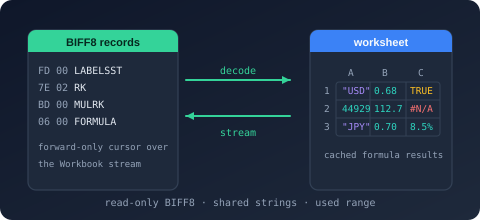

Bodu.Formats.Excel Namespace
- Package

Purpose
Bodu.Formats.Excel.Binary is a narrow, read-only reader for the Excel binary workbook format (.xls) - BIFF8 as written by Excel 97-2003 and BIFF5 as written by Excel 5.0/95. It surfaces the raw cell values of each worksheet - strings, numbers, booleans, and errors, including a formula cell's cached result - along with each cell's number format and date-format detection, the workbook date system, each sheet's declared used range, and the workbook document properties. It performs no formula evaluation, styling, or higher-level interpretation.
An .xls file is a BIFF5 or BIFF8 record stream stored inside the Workbook (or legacy Book) stream of an OLE2 compound file. This package interprets that record stream as worksheets and cells; the container around it is read by CompoundFile, and the records are framed and decoded by BiffReader from Bodu.IO.Biff - the package is built on both. The version a workbook was written in is exposed through BiffVersion. The assembly and package keep the .Binary suffix, but the public namespace is flattened to Bodu.Formats.Excel so a future Excel-format package can share the value model.
Static documentation
- Introduction - the headline types, the layered shape, and the scenarios the reader covers.
- Core concepts - BIFF record, workbook globals, shared string table, cell kind, serial date, and used range.
- Getting started - install and minimal samples for opening, listing, and reading cells.
- Reading workbooks - the open path, sheet listing, reader options, and document properties.
- Cell values and dates - cell kinds, cached formula results, date detection, serial-date and A1 conversion.
- Streaming vs materialized - the forward-only reader versus the randomly addressable worksheet.
Key types
Workbook session
- ExcelBinaryWorkbook - the disposable read-only session.
OpenRead(path /FileInfo/Stream) andOpen(Stream, options)factories,Worksheets,Properties,DateSystem,BiffVersion(BiffVersion), theOpenWorksheet/ReadWorksheetsurfaces, and theGetDateTime/GetNumberFormatCodehelpers. - ExcelBinaryReaderOptions -
LeaveOpen,ReadDocumentProperties,DetectDateFormats; trades optional metadata work for throughput and governs stream ownership. - ExcelWorkbookProperties - the flattened document fields read from the OLE summary-information streams.
Cell surfaces
- ExcelWorksheetReader - the forward-only, low-allocation reader;
TryReadCell,ReadCells,ReadRows. - ExcelWorksheet / ExcelRow - the materialized, randomly addressable worksheet (
TryGetCell,Cells,Rows) and its grouped rows.
Value model
- ExcelCell - the immutable cell value:
RowIndex,ColumnIndex,Kind, the typed value projection,FormatIndex, andIsDateFormatted. - ExcelCellKind, ExcelErrorCode - the cell classification and the BIFF spreadsheet error codes.
- ExcelWorksheetInfo, ExcelWorksheetDimensions, ExcelSheetVisibility, ExcelSheetType - the sheet descriptor, its declared used range, visibility, and type.
Helpers
- ExcelSerialDate, ExcelDateSystem - serial-date conversion and the 1900 / 1904 date systems.
- ExcelCellReference - A1 reference conversion (
ColumnName,ToA1,TryParseA1).
Errors
- ExcelBinaryFormatException (malformed record), ExcelBinaryWorkbookStreamNotFoundException (no workbook stream), ExcelBinaryUnsupportedException (a BIFF version other than BIFF5 or BIFF8), ExcelBinaryEncryptedWorkbookException (encrypted).
Example
using Bodu.Formats.Excel;
using ExcelBinaryWorkbook workbook = ExcelBinaryWorkbook.OpenRead("rates.xls");
foreach (ExcelWorksheetInfo sheet in workbook.Worksheets)
Console.WriteLine($"{sheet.Index}: {sheet.Name} ({sheet.Dimensions.RowCount} rows)");
using ExcelWorksheetReader reader = workbook.OpenWorksheet("Data");
while (reader.TryReadCell(out ExcelCell cell))
{
string a1 = ExcelCellReference.ToA1(cell.RowIndex, cell.ColumnIndex);
if (cell.Kind == ExcelCellKind.Number && cell.IsDateFormatted)
Console.WriteLine($"{a1} = {ExcelSerialDate.FromSerialDate(cell.NumberValue!.Value, workbook.DateSystem)}");
else if (cell.Kind == ExcelCellKind.String)
Console.WriteLine($"{a1} = {cell.StringValue}");
}
Notes
- Read-only. The reader surfaces values; it never writes, evaluates formulas, applies styles, or interprets charts and macros. A formula cell yields its cached result - the value Excel last stored - surfaced as whichever kind that value holds.
- Layered stack. The package interprets only the BIFF5 and BIFF8 records; the OLE2 container around them is read by Bodu.IO.Compound, and the record framing and decoding come from Bodu.IO.Biff. A consumer that needs only the container depends on
Bodu.IO.Compoundalone, and one that needs only the record codec depends onBodu.IO.Biffalone. The Reserve Bank of Australia exchange-rate provider (Bodu.Financial.ExchangeRates.Rba) parses the same.xlsshape on top of this reader. - Sparse surfaces. Blank cells are never returned, so both the streaming reader and the materialized worksheet are sparse. The streaming ExcelWorksheetReader bounds allocation to one cell; the materialized ExcelWorksheet buffers the whole sheet for random access.
- Dates are numbers. Excel stores dates as floating-point serial numbers. The reader never reinterprets a number, but flags date-formatted cells via IsDateFormatted and offers ExcelSerialDate for conversion against the workbook's 1900 or 1904 date system.
- Errors. Malformed records surface through ExcelBinaryFormatException; a missing workbook stream, a BIFF version other than BIFF5 or BIFF8, and an encrypted workbook through their dedicated exceptions. Codec failures are translated at the boundary with the BiffFormatException or BiffUnsupportedVersionException preserved as the inner exception.
- See also: the introduction, core concepts, and getting-started; the Binary Formats & I/O topic; the container reader Bodu.IO.Compound and the record codec Bodu.IO.Biff beneath it.
Classes
- ExcelBinaryEncryptedWorkbookException
The exception thrown when a workbook is encrypted and therefore cannot be read by this reader.
- ExcelBinaryFormatException
The exception thrown when the content of a workbook stream does not conform to the BIFF record structure.
- ExcelBinaryReaderOptions
Controls how an ExcelBinaryWorkbook opens and reads a workbook, allowing callers to trade optional metadata work for throughput and to govern stream ownership.
- ExcelBinaryUnsupportedException
The exception thrown when a workbook declares a BIFF version or feature this reader does not support.
- ExcelBinaryWorkbook
Provides a disposable, read-only session over an Excel binary workbook (
.xls, BIFF5 as written by Excel 5.0/95 or BIFF8 as written by Excel 97-2003), exposing its sheets and the raw cell values of each.
- ExcelBinaryWorkbookStreamNotFoundException
The exception thrown when a compound file does not contain a workbook stream (named
Workbookfor BIFF8 orBookfor older BIFF versions).
- ExcelCellReference
Converts between zero-based cell coordinates and the spreadsheet A1 reference notation (for example,
A1orAB10).
- ExcelRow
Represents a single populated row of a worksheet: its zero-based index and the populated cells it contains, in ascending column order.
- ExcelSerialDate
Converts Excel serial date numbers into calendar dates.
- ExcelWorkbookProperties
Exposes the flattened document properties of a workbook, read from the compound file's summary-information property sets.
- ExcelWorksheet
Provides a materialized, randomly addressable view over the populated cells of a single worksheet.
- ExcelWorksheetInfo
Describes a sheet within a BIFF workbook: its name, position, visibility, type, and declared used range.
- ExcelWorksheetReader
Provides a forward-only, low-allocation reader over the populated cells of a single worksheet substream.
Structs
- ExcelCell
Represents a single populated cell read from a BIFF worksheet, carrying its zero-based position and raw value.
- ExcelWorksheetDimensions
Describes the used range of a worksheet as declared by its
DIMENSIONSrecord: the half-open span of rows and columns that bounds the sheet's populated cells.
Enums
- ExcelCellKind
Classifies the value carried by an ExcelCell.
- ExcelDateSystem
Identifies the date base (epoch) a workbook uses to interpret serial date numbers.
- ExcelErrorCode
Identifies the spreadsheet error value carried by an ExcelCell of kind Error. The underlying values match the error codes defined by the Excel binary file format, which are the same in BIFF5 and BIFF8.
- ExcelSheetType
Identifies the kind of substream a bound-sheet record points to, as declared by its sheet-type field.
- ExcelSheetVisibility
Identifies the visibility a workbook declares for a sheet through the hidden-state field of its bound-sheet record.